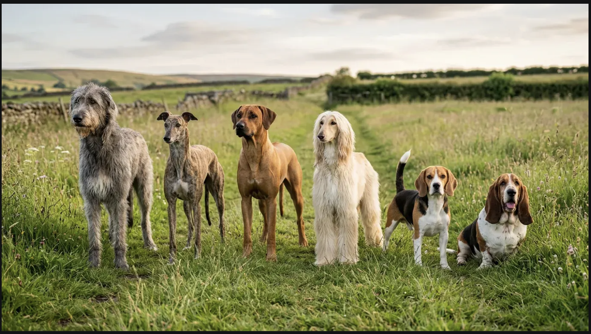
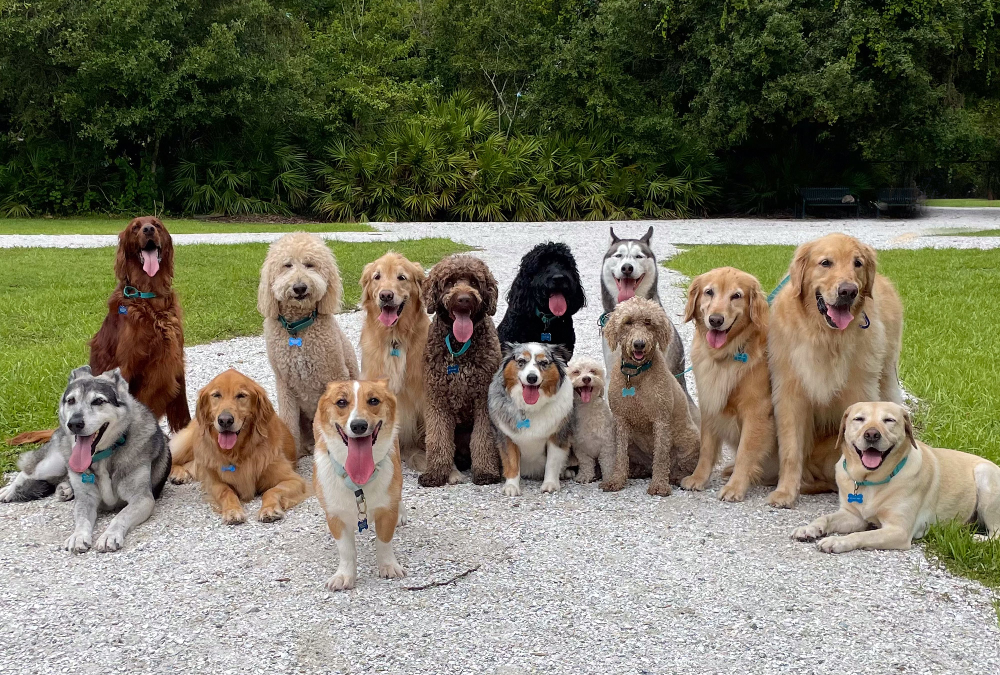

A dogs nose allows them to track scents from miles away. Their noses aree even capable of detecting illnesses in humans. Dogs also have 3 eyelids to keep their eyes clean. Ever wondered why your dogs curls up? It's a natural instinct to protect their organs!
The average dog can learn 165 words. Truly exceptional breeds can learn up to 250 words. Did you know your dog can actually get jealous if they see you interact with another animal? Jealousy is in all species! Dogs also only have sweat glands in their paws, so they rely primarily on panting to cool down.


© 2025 Borash Veterinary Clinic. All rights reserved. Source: Dog Facts
© American Kennel Club (AKC). All rights reserved. Source: More Dog Facts
© Newport Veterinary Hospital. All rights reserved. Source: More Facts About Dogs
© Purina. All rights reserved. Source: Even more facts!